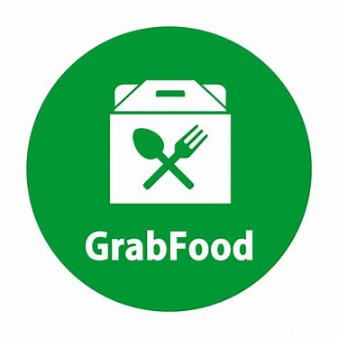
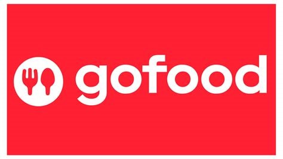

Baik Su Korean adalah restoran yang menyajikan pengalaman kuliner otentik Korea di jantung kota Surabaya. Dengan suasana yang hangat dan nyaman, restoran ini menawarkan berbagai hidangan khas Korea yang disiapkan dengan bahan-bahan segar dan resep tradisional.
Di Baik Su, Anda dapat menikmati berbagai pilihan menu, mulai dari kimchi yang segar, bulgogi yang lembut, hingga jjigae (sup) yang menggugah selera. Restoran ini juga dikenal dengan hidangan BBQ-nya yang memungkinkan Anda memanggang daging pilihan di meja, menciptakan pengalaman bersantap yang interaktif dan menyenangkan.
Dengan staf yang ramah dan layanan yang cepat, Baik Su Korean menjadi tempat yang sempurna untuk berkumpul bersama teman dan keluarga. Apakah Anda seorang penggemar masakan Korea atau baru ingin mencobanya, Baik Su siap memanjakan lidah Anda dengan cita rasa yang autentik dan menyenangkan. Datang dan nikmati pengalaman kuliner Korea yang tak terlupakan di Surabaya!
halaman rekomendasi sesuai iven
join member vip and take your discount up to 10%
available on


klik untuk melihat lokasi kami
pt. baik su korean restaurant
komplek, darmo park 1, jl.mayor jendral sungkono blok IV no.4-5 kec.sawahan, suarabya, jawa timur,indonesia 60256